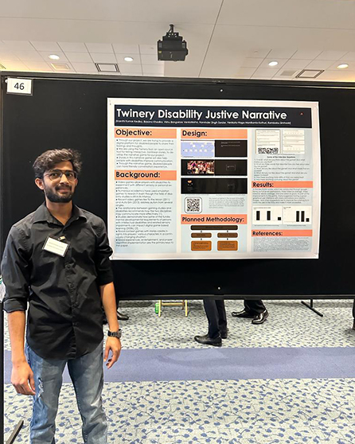

Kranthi Kumar Kedika
Software Engineer with over 3 years of professional experience in the IT industry and possesses expertise in creating and managing SQL and Python scripts, analyzing business requirements, and developing data model designs for business scenarios.
About Me
Full-Stack Software Developer
Data Analyst
Data Engineer
Data Scientist
Skills
Technical Skills
- Python (NumPy, Pandas)
- C++
- Java
- SQL (PostgreSQL, MySQL)
- TypeScript
- React.js
- JavaScript
- Angular
- Node.js
- Unix
- JIRA
- OOPS
- Algorithms
- Git
- Machine Learning (Tensorflow, Scikit-learn)
- AWS (S3, EC2, Lambda, SNS, SQS, DynamoDB, Step Functions)
- Problem Solving
- Excellent Communication
- Teamwork
- Adaptability
Soft Skills
Work Experience
I am a software engineer with solid skills in multiple programming languages, databases, tools, and platforms. My passion for creating communities constantly drives me to learn and adapt to new environments and technologies.
Software Engineer at Accenture
Chennai, India | September 2019 - December 2021
- Integrated with RESTful APIs to fetch data from backend services and used the HttpClient module to handle HTTP requests and responses effectively.
- Developed complex reporting modules using HTML5, CSS3, Angular, ReactJS, and jQuery to visualize and present data intuitively.
- Created a single-page application that loads multiple views using route services and adds more user experience to make it dynamic using Angular framework and Node JS.
- Collaborated on integrating server-side and client-side code using AWS.
- Conducted in-depth time series analysis using Jupyter Notebooks, leading to a 20% improvement in forecasting accuracy compared to traditional methods.
- Applied data analysis techniques to structured and unstructured data, enhancing decision-making accuracy and contributing to a 15% increase in predictive modeling effectiveness.
- Extracted actionable insights from complex data sets, resulting in data-driven recommendations that led to a 15% increase in operational efficiency.
- Improved old data pipelines and SQL queries, resulting in 10% faster production job execution.
- Managed multi-environment setup for seamless development and deployment, optimizing workflow procedures.
- Demonstrated strong problem-solving and analytical skills through troubleshooting data discrepancies and optimizing queries.
- Leveraged Linux/Unix proficiency for managing database systems and ETL processes.
- Created interactive dashboards in Microsoft PowerBI and Tableau, providing stakeholders with real-time access to KPI and reducing reporting time by 20%.
Associate Software Engineer at Accenture
Chennai, India | December 2018 - August 2019
- Worked in an Agile development methodology environment and Interacted with the users, Business Analysts for collecting and understanding the business requirements.
- Analyzing the method of transforming existing data into a format for the new environment and loading of this data into other database structures.
- Tested to verify that all data were synchronized after the data was troubleshot and used SQL to verify/validate my test cases.
- Conducted performance tuning and optimization of data pipelines, significantly reducing processing time and resource consumption, leading to cost-effective data operations.
- Led designing and implementing a robust multi-environment like Dev, Sys, INT, QA, and Prod setup for data pipelines and codebase, enabling seamless development, testing, and deployment procedures.
- Implemented data quality checks, minimizing anomalies and improving downstream data accuracy by 15%.
- Enhanced ELT/ETL pipelines with incremental loading strategies, resulting in a 20% reduction in processing time.
Education
I hold a Master's degree in Computer Science from Northern Arizona University, Flagstaff, AZ, USA (May 2023), and a Bachelor's degree in Computer Science from Saveetha School of Engineering, Chennai, India (May 2018).
Master of Computer Science
Northern Arizona University, Flagstaff, Arizona
January 2022 - May 2023
GPA: 3.10/4.00
Relevant Coursework: Advanced Intelligent Systems, Contemporary Developments (Accessible Games for Health), Applied Cryptography, Applied Business Intelligence, Statistical Methods i, Software Assurance.
Bachelor of Computer Science
Saveetha School of Engineering, Chennai, India
August 2014 - May 2018
CGPA: 7.33/10
Publications
Secured Data Transmission in Cloud Using Hybrid Cryptography
I worked with my professor, Devi T, to develop a new cryptography technique that enhances cloud infrastructure security. We published a paper in the "International Journal of Pure and Applied Mathematics" 2018. Our approach employs a combination of symmetric and asymmetric encryption algorithms known as Hybrid Cryptographic methods to maximize security.
Projects
Check out my GitHub profile to explore my projects firsthand. Witness the depth of my coding expertise and creativity in action.
Awards
During my time at NAU, I led a team of three in creating an interactive narrative game called "Disability Justice Twinery Narrative." The game won second place at Engineering FEST-1 and provided a platform for improving communication skills for people with disabilities.
Contact
- +1(928) 221-0819
- kranthikube@outlook.com
- Flagstaff, AZ, USA.